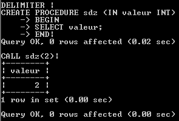
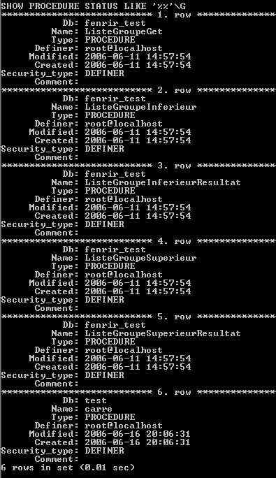
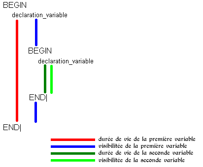

Vous avez vu la première partie : les requêtes préparées et vous avez adoré : alors vous allez aimer ça. :D
Les procédures stockées, apparues avec MySQL 5, sont ce que la caféine est au café, on peut boire le café sans, mais ça ne serait pas aussi bon. :)
Cette partie de MySQL, qui n'est encore que trop peu utilisée, est un bon moyen de mettre en oeuvre des scripts avancés qui, non content de pouvoir faire tout un tas d'actions, permettent une optimisation des scripts, éventuellement une couche d'abstraction supplémentaire pour la programmation et, plus basiquement, des requêtes qui sans cela seraient complexes et lourdes à mettre en oeuvre, voire impossibles.
C'est donc en partant de ce constat que je vais m'efforcer de vous montrer tous ces points et bien plus ...
Pré-requis : - MySQL 5.0 ou Supérieur - avoir des connaissances de base sur MySQL est recommandé (savoir faire des SELECT, UPDATE, INSERT, DELETE) - des bases en algorithme pour faire vos propres scripts par la suite - savoir utiliser MySQL en ligne de commande pour pouvoir effectuer les exercices.
Le nommage respecte les règles habituelles, imaginons donc une procédure nommée 'sdz', elle sera créée sous la forme :
CREATE PROCEDURE sdz() caracteristiques
Rien de compliqué jusque là, mais le point le plus important concerne les paramètres qui se décomposent en trois parties. sens_du_parametrenom_parametretype_parametre
Le sens du parametre peut prendre 3 valeurs : IN : le paramètre sera une valeur ou une variable d'entrée. Le paramètre indiqué peut être une valeur ou une variable que vous envoyez lors de l'appel, et qui sera utilisé à l'intérieur de la procédure. OUT : le paramètre sera une variable de sortie. Le paramètre indiqué sera une variable (de session ou de procédure) qui prendra une valeur (enfin normalement, sinon ça n'a que peu d'intérêt) lors de la procédure. INOUT : le paramètre sera une variable d'entrée-sortie. Cette variable pourra être utilisé ou non dans la procédure, et verra normalement sa valeur modifiée lors de la procédure.
Le nom_parametre suit les règles de nommage habituel. Ce nom de paramètre représentera par la suite dans la procédure une variable qui aura pour valeur celle qu'on lui aura assigné. Si vous ne comprenez pas ce que ça veut dire, ce n'est pas grave, les exemples ci-dessous sont là pour ça. ;)
Le type_parametre prend en valeur le type de la valeur ou de variable attendu.
Avant de passer à la pratique, rappelons un point important : les procédures stockées sont, comme leur nom l'indique, stockées... J'entends déjà des "on s'en serait douté". En fait, s'il est vrai qu'elles le sont, ceci entraîne plusieurs choses importantes et qui font toute la puissance des procédures stockées. De par ce statut, elles sont à tout moment utilisables ; ainsi, les déclarer une fois pour une base de données suffit pour pouvoir les utiliser par la suite à tout moment. Contrairement aux requêtes préparées, elles ne dépendent pas d'un thread et ne sont pas détruites automatiquement ; de même, elles restent présentes si le serveur s'arrête.
Ceux disposant de MySQL Query Browser pourront par la suite vérifier cet état de fait en ouvrant la base qu'ils ont utilisée, et verront apparaître en dessous des tables, de nouvelles icônes qui, sur leur côté, porte le nom de la procédure concernée.
Passons maintenant aux exemples.
Pour commencer, nous allons changer le délimiteur de fin de requête utilisé, ceci non pas afin de vous perturber mais tous simplement par commodité pour la suite. Pour ce faire, tapez ceci en ligne de commande :
DELIMITER |
Désormais, quand vous terminerez une requête, il ne faudra plus faire ; mais |.
Première procédure Nous allons créer une procédure qui nous renvoie la valeur que nous lui avons passée en paramètre.
CREATE PROCEDURE sdz(IN valeur VARCHAR(20))
BEGIN
SELECT valeur;
END|
Ceci est la structure complète d'une procédure : comme vous le voyez, ici apparaissent des choses dont je n'ai pas encore parlé : BEGIN et END, qui permettent de mettre plusieurs instructions à l?intérieur. Et chaque instruction à l?intérieur de ce bloc se termine bien par ;, qui n'est en rien une erreur car si nous avions laissé notre délimiteur normal, alors ça n'aurait pas marché. Pour ceux qui ne me croient pas, je les invite à remettre le délimiteur ; normal en faisant :
DELIMITER ;
et à réessayer. :) Dans ce bloc, nous voyons une instruction qui va chercher la valeur que nous avons passée en paramètre d'entrée, et qui a été stockée dans la variable 'valeur'.
Voilà : vous avez fait votre première procédure, ô combien simpliste.
Appel d'une procédure
Nous avons vu dans la partie précédente comment créer une procédure, nous allons apprendre désormais à l'appeler. Pour cela rien de plus simple, tapez :
CALL sdz(2)|
Si avez toujours le délimiteur |, vous ne devriez pas avoir de problème et en suivant les étapes depuis le début, vous aurez le résultat suivant :

Remarquez qu'ici l'appel est relativement simple, on peux complexifier la chose en partant du principe que notre valeur est dans une variable : pour ce faire, on va déclarer une nouvelle variable '@a', à laquelle on affectera une valeur :
SET @a:=666|
Notre variable de session vaut donc désormais 666. Bien ! Appelons notre procédure avec cette variable :
CALL sdz(@a)|
et la valeur qui va s'afficher est notre 666.
Tu ne nous avais pas dit qu'il existait autre chose que IN ?
Absolument, et maintenant que vous avez vu le principe de base, nous allons refaire une procédure mais qui elle prendra en plus un paramètre de sortie. Pour l'occasion, on va faire un truc plus utile que précédemment. :-° Calculons le carré d'un nombre :
CREATE PROCEDURE carre(IN valeur INT, OUT toto BIGINT)
BEGIN
SELECT valeur*valeur INTO toto;
END|
En plus, on a un deuxième paramètre qui recevra une variable qui servira pour la sortie, de type BIGINT. Dans le bloc d'instructions, on a une requête qui prend la valeur d'entrée, la multiplie par elle-même et le INTO va permettre de dire "stocke-moi le résultat ici", qui sera alors mis dans la variable locale 'toto'. Cette variable n'est pas accessible en dehors.
Ouais : donc le résultat, on le récupère comment ?
Ah vous allez voir, c'est simple. :) On appelle la procédure que l'on vient de créer comme ceci :
CALL carre(2,@b)|
Là, on demande de calculer le carré de 2 en passant 2 à la valeur d'entrée, et on indique la variable '@b' qui stockera le résultat pour la sortie : remarquez que cette variable est, dans ce cas-ci, globale à la session (ce qui veut dire qu'une autre session peut très bien appeler la même procédure sans que les résultats ne s'écrasent : donc, chaque résultat est lié à la session).
J'ai fait comme toi mais il ne se passe rien... o_O
En fait c'est normal, la vraie magie c'est maintenant :
SELECT @b|
La requête retourne le résultat du calcul, c'est-à-dire : 4.
Si vous avez tout compris jusque là, alors rendez-vous à la suite.
Supprimer une procédure
Certainement la partie la plus courte du tutoriel. vous venez de créer deux procédures dans les parties précédentes, bien : nous allons supprimer la première qui ne sert strictement à rien.
DROP PROCEDURE sdz|
vous venez de supprimer votre procédure. Eh oui, c'est déjà fini... :lol:
Voir les procédures existantes
Vous souhaiterez certainement savoir par la suite comment lister les procédures que vous avez créées : pour cela, rien de plus simple. Si vous voulez voir TOUTES les procédures de toutes les BDDs auxquelles vous avez un accès, alors :
SHOW PROCEDURE STATUS LIKE '%%'\G
Remarquez dans ce cas que j'ai utilisé '%%' pour indiquer que je veux toutes les procédures (rien ne vous empêche de mettre une expression qui corresponde plus à vos besoins) et \G comme délimiteur de fin de requête pour avoir un affichage lisible humainement en ligne de commande.

Vous remarquerez certainement le paramètre Security_type dont je n'ai pas encore parlé : sachez qu'il peut être intéressant pour vous de le connaître tout comme la ligne : Definer, mais j'y reviendrai plus tard.
Avant de passer à la suite, je tiens à signaler que le LIKE '%%' n'est pas obligatoire dans ce cas, vous aurez le même affichage sans. ;)
Affichage de la structure des procédures
Il est possible que vous ayez envie de voir à quoi ressemble votre procédure une fois que vous l'aurez créée : pour cela, faites :
SHOW CREATE PROCEDURE nom_procedure \G
Vous devez connaître le nom de la procédure, et celle-ci doit se trouver dans la base de données courante : si vous essayer d'appeler une procédure (que vous auriez vue par exemple grâce à la requête donnée en début de cette partie) qui se trouve dans une autre base, vous aurez une erreur vous signalant que la procédure n'existe pas. Ceci paraît relativement logique dans la mesure où chaque base de données peut avoir des procédures qui, dans ce cas, auront des noms communs.
Comme vous le remarquez, le code de la procédure apparaît avec d'autres renseignements. :)
Comme nous l'avons vu dans les parties précédentes, les blocs d'instructions permettent de délimiter une zone d'instructions ; cependant, pour les autres parties du tuto, vous aurez besoin de comprendre son fonctionnement afin de ne pas vous arracher les cheveux. :-°
La syntaxe que nous avons vue précédemment est la plus simple, à savoir un BEGIN pour signaler le début, un END pour signaler la fin et l'instruction de fin de requête derrière le END pour fermer le bloc.
Cependant, pour la suite, vous aurez peut-être besoin d'attribuer un nom au bloc à fermer ; pour ce faire, vous devez déclarer un label, ou si vous préférez, un nom pour le bloc. Exemple :
sdz_label: BEGIN
# ici les instructions
END sdz_label;
Remarquez que le label de fin doit être le même que pour celui du début.
Maintenant voyons le comportement des variables locales dans un bloc. Cette variable locale (déclarée dans une procédure, j'y reviendrai) a une 'durée de vie' et une 'visibilité'. Ces deux notions -à ne pas confondre- sont ce qui est souvent source d'erreur.
Durée de vie : la variable existe de sa déclaration jusqu'à la fin du bloc la contenant. Visibilité : espace où la variable peut être utilisée. La variable est visible jusqu'à la fin du bloc et passe invisible dès qu'un nouveau bloc commence et ce, jusqu'à ce que le dit bloc se finisse.
Voici un petit schéma qui rendra les choses plus claires :

Enfin, on va faire un exemple qui permettra de lever d'éventuels doutes :
CREATE PROCEDURE visibilite()
BEGIN
DECLARE var INT DEFAULT 1;
SELECT var AS 'Je suis la variable var du bloc 1';
BEGIN
DECLARE var INT DEFAULT 5;
SELECT var AS 'Je suis la variable du bloc 2';
SET var=10;
SELECT var AS 'Je suis la variable du bloc après modification';
END;
SELECT var AS 'Je suis toujours la variable du bloc 1';
END;
Lors d'une procédure, il est possible de déclarer des variables qui seront locales à la procédure, comme nous l'avons dans la partie précédente ; ces variables ont une durée de vie et une visibilité dont le schéma suivant est le récapitulatif :
Pour créer une variable il faut utiliser la syntaxe :
DECLARE nom_variable type_variable;
Cependant ceci ne suffit pas : la déclaration des variables doit être faite impérativement derrière la déclaration du bloc, donc derrière BEGIN.
Exemple :
CREATE PROCEDURE calcul1()
BEGIN
DECLARE i INT DEFAULT 1;
DECLARE j FLOAT DEFAULT PI() ;
SELECT i + j;
END|
Dans les procédures, il est tout à fait possible de mélanger les types de variables différentes, et mêmes de les utiliser dans les requêtes. De même, les variables ont des espaces de noms différents ; il est donc tout à fait possible d'avoir ceci :
CREATE procedure toto()
BEGIN
declare a int DEFAULT 1;
SET @a:=2;
SELECT a,@a;
END|
Dans ce cas, les variables ont un nom identique, mais la première est une variable locale à la procédure et l'autre, une variable globale à la session.
Gestionnaire
Lorsque vous écrirez des procédures, vous pourrez être confrontés à des problèmes de la forme suivante : "et là, si je mets une valeur qui est déjà dans la base de données, comment faire pour que la procédure continue sans s?arrêter ?". C'est un exemple de problème qui ne peut se gérer qu'avec la déclaration d'un gestionnaire, qui permettra de dire au programme : "continue d'exécuter la procédure et tais-toi", fort pratique pour éviter le comportement par défaut qui, lors d'une rencontre avec une erreur, sortira (EXIT) directement de la procédure.
Exemple :
CREATE TABLE t (s1 int,PRIMARY KEY (s1))|
CREATE PROCEDURE erreur_continue ()
BEGIN
DECLARE CONTINUE HANDLER FOR 1062 SELECT 'ERREUR';
SELECT 'je suis 1';
INSERT INTO t VALUES (1);
SELECT 'je suis 2';
INSERT INTO t VALUES (1);
SELECT 'je suis 3';
END;
|
Cet exemple, inspiré du manuel mais corrigé, essaie de mettre deux valeurs dans une table t ; seulement lors du deuxième appel, une erreur de clé dupliquée sera générée dans ce cas-là si nous n'avions pas la ligne :
DECLARE CONTINUE HANDLER FOR 1062 SELECT 'ERREUR';
Le code s'arrêterait là et la ligne :
SET @x = 3;
ne serait pas exécutée, ce qui n'est pas très pratique.
Ouais, mais alors, comment on fait ?
Vous allez voir, c'est pas trop compliqué : pour cela, on va suivre la syntaxe suivante :
DECLARE type_gestionnaire HANDLER FOR condition_valeur requete;
Il existe deux types de gestionnaires actuellement supportés, qui sont : EXIT : lors de la rencontre d'une erreur, la procédure s'arrête (comportement par défaut). CONTINUE : lors de la rencontre d'une erreur, la procédure continue.
Si on avait mis EXIT à la place de CONTINUE dans l'exemple précédent, la phrase 'je suis 3' ne serait pas apparue.
Vient ensuite condition_valeur qui est subtile dans la mesure où il existe plusieurs conditions possibles, et que parmi elles, certaines reprennent un code d'erreur standard à SQL, les autres provenant du standard de MySQL. Par exemple : ci-dessus, j'ai mis la valeur 1062 qui correspond au code d'erreur MySQL pour les clés dupliquées, mais j'aurais aussi bien pu utiliser le code d'erreur standard à la place, ce qui donne ceci :
DECLARE CONTINUE HANDLER FOR SQLSTATE '23000' SELECT 'ERREUR';
Comme vous pouvez le remarquer, le mot clé SQLSTATE est venu en plus du code, et le numéro de l'erreur est entouré ; si vous ne le faites pas, vous aurez une erreur. De même, si vous utilisez uniquement le code d'erreur sans déclarer SQLSTATE, vous aurez aussi une erreur (l'erreur du manuel MySQL est là).
Il existe encore d'autres conditions : SQLWARNING : raccourci pour tous les codes SQLSTATE qui commencent par 01. NOT FOUND : raccourci pour tous les codes SQLSTATE qui commencent par 02. SQLEXCEPTION : raccourci pour tous les codes SQLSTATE qui ne sont pas représentés par SQLWARNING ou par NOT FOUND.
Et si on veut plusieurs codes d'erreurs ?
C'est tout à fait possible, par exemple :
CREATE PROCEDURE erreur_continue ()
BEGIN
DECLARE CONTINUE HANDLER FOR SQLSTATE '02000', SQLEXCEPTION SELECT 'ERREUR';
SELECT 'je suis 1';
INSERT INTO t VALUES (1);
SELECT 'je suis 2';
INSERT INTO t VALUES (1);
SELECT 'je suis 3';
END;
|
Vous avez donc vu tout ce qu'il est possible de faire avec les gestionnaires ; remarquez que la requête que j'ai mise en fin est un exemple, vous pouvez tout à fait effectuer un autre traitement, voire même mettre des blocs d'instructions.
Exemple :
CREATE PROCEDURE erreur_continue ()
BEGIN
DECLARE CONTINUE HANDLER FOR SQLEXCEPTION
BEGIN
SELECT 'ERREUR';
SELECT 'je suis une instruction du bloc d\'erreur';
END;
SELECT 'je suis 1';
INSERT INTO t VALUES (1);
SELECT 'je suis 2';
INSERT INTO t VALUES (1);
SELECT 'je suis 3';
END;
|
Est-il possible d'avoir une gestion nominative des erreurs ?
Oui, ce qui permet d'ailleurs une meilleur lisibilité. Reprenons notre code précédent et rajoutons-y ce qui manque :
CREATE PROCEDURE condition_propre ()
BEGIN
DECLARE condition_cle_duplique CONDITION FOR SQLSTATE '23000';
DECLARE CONTINUE HANDLER FOR condition_cle_duplique SELECT 'ERREUR';
SELECT 'je suis 1';
INSERT INTO t VALUES (1);
SELECT 'je suis 2';
INSERT INTO t VALUES (1);
SELECT 'je suis 3';
END;
|
La nouvelle ligne est la suivante :
DECLARE condition_cle_duplique CONDITION FOR SQLSTATE '23000';
Détaillons-la donc selon sa syntaxe.
DECLARE nom_type_erreur CONDITION FOR type_erreur;
Nous définissons donc ici un nom qui sera utilisable quand la condition suivante est rencontrée. Dans notre cas, nous avons dit d'associer 'condition_cle_duplique' à l'erreur de clé dupliquée (code d'erreur 23000 en SQL Standard). Il est donc possible par la suite de donner ce nom plutôt qu'un nom peu parlant. Le nom ainsi créé devra être appelé à la place du type d'erreur attendu dans :
DECLARE CONTINUE HANDLER FOR condition_cle_duplique SELECT 'ERREUR';
Tout ceci vous permettra une meilleure conception de vos procédures, et surtout la possibilité de leur apporter une certaine autonomie face aux erreurs.
Jusqu'à maintenant, ce que vous avez vu vous permet de construire des procédures relativement intéressantes : cependant, vous serez vite confrontés au problème de la lecture des résultats lorsqu'une requête SELECT renvoie plus d'une ligne.
Pour remédier à cela, il y a les curseurs qui pour le moment sont peu évolués (car ils sont en lecture seule et non navigable) dans MySQL ; mais ils nous suffiront. :)
Imaginons que nous ayons une table de membres : nous souhaiterions lire l'identifiant et le mot de passe qui y sont contenus, ce qui donne la chose suivante :
CREATE PROCEDURE liste_membres()
BEGIN
DECLARE var_identifiant VARCHAR(64);
DECLARE var_mot_passe VARCHAR(32);
DECLARE curseur1 CURSOR FOR SELECT identifiant, mot_passe FROM membres;
OPEN curseur1; # ouverture du curseur1
# première ligne du résultat
FETCH curseur1 INTO var_identifiant, var_mot_passe;
SELECT var_identifiant, var_mot_passe;
# seconde ligne du résultat
FETCH curseur1 INTO var_identifiant, var_mot_passe;
SELECT var_identifiant, var_mot_passe;
# troisième ligne du résultat
FETCH curseur1 INTO var_identifiant, var_mot_passe;
SELECT var_identifiant, var_mot_passe;
CLOSE curseur1; # fermeture du curseur1
END;
Première chose à remarquer, cette structure ne récupère que trois des lignes, ce qui n'est pour le moment que peu intéressant pour nous ; dans les parties suivantes, nous verrons comment simplifier ça tout en permettant une lecture totale du jeu de résultats.
Première chose effectuée dans cet exemple après avoir déclaré deux variables locales qui nous resserviront plus bas :
DECLARE curseur1 CURSOR FOR SELECT identifiant, mot_passe FROM membres;
On demande la création d'un curseur nommé 'curseur1' qui va aller chercher le jeu de résultats correspondant à la requête : SELECT identifiant, mot_passe FROM membres;
Ensuite, afin de pouvoir utiliser notre jeu de résultats et parcourir ce qui est à l'intérieur, nous l'ouvrons avec ceci :
OPEN curseur1;
S'ensuit la partie :
FETCH curseur1 INTO var_identifiant, var_mot_passe;
Nous lisons le résultat du curseur1 pour la ligne courante. Chaque appel à FETCH fait avancer d'une ligne dans le jeu de résultats. Nous affectons le résultat de cette ligne à nos variables.
Enfin, après avoir récupéré nos lignes, nous fermons le curseur1 à l'aide de :
Vous souhaiteriez certainement dans certains cas vérifier des valeurs et effectuer des actions en conséquence : le IF est là pour vous permettre ce genre de choses.
Imaginons la procédure suivante :
CREATE PROCEDURE controle_if(IN var INT)
BEGIN
IF var = 1 THEN
SELECT 'Il est vrai de dire que 1 = 1 :D';
ELSE
SELECT 'Fou est celui qui vous dira que 1 est égal à autre chose que 1 :D';
END IF;
END|
CALL controle_if(1)|
CALL controle_if(2)|
Procédure simple qui compare la variable passée en paramètre à la procédure avec 1. Si les deux sont égaux, alors le résultat suivant est exécuté, et si ce n'est pas le cas, la partie contenue après le ELSE (sinon) est quant à elle exécutée. L'appel des deux CALL nous démontre bien le résultat.
Y a pas moyen de mettre plusieurs IF ?
Il est tout à fait possible de mettre plusieurs conditions, ce qui donne la chose suivante :
CREATE PROCEDURE controle_if(IN var INT)
BEGIN
IF var = 1 THEN
SELECT 'Il est vrai de dire que 1 = 1 :D';
ELSEIF var = 2 THEN
SELECT 'Il est vrai de dire que 2 = 2 :D';
ELSE
SELECT 'La variable passée en paramètre vaut autre chose que 1 et 2';
END IF;
END|
CALL controle_if(1)|
CALL controle_if(2)|
CALL controle_if(3)|
Pour chaque condition que vous souhaiterez ajouter, il vous suffira d'ajouter une ligne :
ELSEIF condition_vrai THEN requetes
On peut mettre plusieurs requêtes ?
Oui, ce qui peut par exemple donner ceci :
CREATE PROCEDURE controle_if(IN var INT)
BEGIN
IF var = 1 THEN
SELECT 'Il est vrai de dire que 1 = 1 :D';
ELSEIF var = 2 THEN
SELECT 'Il est vrai de dire que 2 = 2 :D';
SELECT 'Je suis 2';
ELSE
SELECT 'La variable passée en paramètre vaut autre chose que 1 et 2';
SELECT var;
END IF;
END|
CALL controle_if(1)|
CALL controle_if(2)|
CALL controle_if(3)|
CASE
Cette syntaxe, qui diffère du CASE normal, va vous permettre d'effectuer une action si une condition est vérifiée.
Il existe deux types de syntaxes : la première se rapprochant de l'utilisation du 'SWITCH' dans les langages de programmation, et l'autre étant équivalente à une succession de 'IF ... ELSEIF ... ELSEIF ... ELSE ...' .
Exemple Syntaxe1 :
CREATE PROCEDURE case1(IN var INT)
BEGIN
CASE var
WHEN 1 THEN SELECT 'Je suis 1';
WHEN 2 THEN SELECT 'Je suis 2';
ELSE SELECT 'Je suis autre chose que 1 et 2';
END CASE;
END|
Dans ce cas, la variable 'var' est comparée à chaque cas rencontré, et si aucune des valeurs n'est vérifiée dans les WHEN, alors l'instruction après ELSE sera exécutée.
Exemple Syntaxe2 :
CREATE PROCEDURE case2(IN var INT)
BEGIN
CASE
WHEN var = 1 THEN SELECT 'Je suis 1';
WHEN var = 2 THEN SELECT 'Je suis 2';
ELSE SELECT 'Je suis autre chose que 1 et 2';
END CASE;
END|
Dans ce cas, la variable 'var' n'est pas évaluée ; au lieu de cela, nous passons d'un bloc de WHEN à l'autre en comparant si une expression est vraie. Si c'est le cas, nous exécutons alors l'instruction qui la suit, sinon, si aucune des expressions n'est vérifiée, alors l'instruction du ELSE est effectuée.
Est-il possible de mettre plus d'une instruction dans THEN ?
Oui vous n'êtes pas limités à une instruction.
LOOP
C'est une structure de boucle qui répète un bloc d'instructions tant qu'elle ne rencontre pas une instruction LEAVE pour l'arrêter.
Exemple :
CREATE PROCEDURE loop1()
BEGIN
DECLARE i INT DEFAULT 0;
LOOP
SET i := i + 1;
SELECT i;
END LOOP;
END|
Aucune condition d'arrêt n'a été rencontrée, et une erreur ne sera rencontrée que lorsque la valeur maximale valide de INT sera rencontrée, soit le chiffre : 2 147 483 647.
Exemple d'arrêt lorsqu'un label est présent :
CREATE PROCEDURE loop1()
BEGIN
DECLARE i INT DEFAULT 0;
je_suis_un_label: LOOP
SET i := i + 1;
SELECT i;
IF i = 10 THEN
LEAVE je_suis_un_label;
END IF;
END LOOP je_suis_un_label;
END|
Le code s'exécute, et si i vaut 10, alors la boucle est arrêtée grâce au nom du label.
REPEAT
Cette instruction de type boucle permet de répéter un bloc d'instructions jusqu'à ce qu'une condition soit vérifiée.
Exemple :
CREATE PROCEDURE repeat1()
BEGIN
DECLARE i INT DEFAULT 0;
REPEAT
SET i := i + 1;
SELECT i;
UNTIL i = 10 END REPEAT;
END|
Une boucle est lancée jusqu'à ce que la valeur de variable locale i soit égale à 10. Plus court que la version avec LOOP pour un résultat identique. :)
WHILE
C'est une structure de type boucle qui répète un bloc d'instructions tant qu'une condition est vraie.
Exemple :
CREATE PROCEDURE while1()
BEGIN
DECLARE i INT DEFAULT 0;
WHILE i < 10 DO
SET i := i + 1;
SELECT i;
END WHILE;
END|
Tant que la variable locale i est inférieure à 10, le bloc d'instructions est exécuté.
ITERATE
ITERATE ne peut être utilisée qu'à l'intérieur d'une boucle LOOP, REPEAT ou WHILE et signifie : "exécute encore une fois la boucle".
Et plus clairement ?
Le mieux sera encore des exemples reprenant nos procédures précédentes.
Exemple LOOP :
CREATE PROCEDURE loop1()
BEGIN
DECLARE i INT DEFAULT 0;
je_suis_un_label: LOOP
SET i := i + 1;
SELECT i;
IF i < 10 THEN ITERATE je_suis_un_label; END IF;
SELECT 'Je suis ', i;
LEAVE je_suis_un_label;
END LOOP je_suis_un_label;
END|
Concrètement la boucle se lance, fait ses instructions, arrive sur la condition qui vérifie que la variable locale i est inférieure à 10 ; si c'est le cas, la boucle est relancée. Vous remarquerez en testant la procédure que la phrase n'est affichée que lors de la dernière boucle : ce qui veut dire que lors des premières boucles, dès qu'on lui dit ITERATE, elle relance tout de suite la boucle portant le label demandé, sans passer par le code qui est en dessous. Ce comportement est quelque peu déroutant et source d'erreur ; donc, quand vous utilisez ceci, faites bien attention et testez davantage. :)
Exemple REPEAT :
CREATE PROCEDURE repeat1()
BEGIN
DECLARE i INT DEFAULT 0;
je_suis_un_label: REPEAT
SET i := i + 1;
SELECT i;
IF i < 10 THEN ITERATE je_suis_un_label; END IF;
SELECT 'Je suis ', i;
UNTIL i < 20 END REPEAT je_suis_un_label;
END|
Si nous exécutions la même chose sans le IF contenant le ITERATE, la boucle s'arrêterait au premier tour ; pourtant, en mettant cette ligne, on s'aperçoit que la valeur est bien incrémentée jusqu'à 10, on retrouve notre résultat du LOOP, ce comportement est déroutant : la vigilance est donc de mise lorsque vous utilisez le ITERATE avec le REPEAT.
Exemple WHILE :
CREATE PROCEDURE while1()
BEGIN
DECLARE i INT DEFAULT 0;
je_suis_un_label: WHILE i < 10 DO
SET i := i + 1;
SELECT i;
IF i < 10 THEN ITERATE je_suis_un_label; END IF;
SELECT 'Je suis ', i;
END WHILE je_suis_un_label;
END|
Tant que i est inférieur à 10, on exécute le bloc ; remarquez que le message est affiché seulement dans la dernière boucle.
Vous trouverez dans cette partie des exemples de procédures prêtes à l'emploi, ou qui permettent de répondre à des problèmes spécifiques.
Puissance d'un nombre : X exposant n
DELIMITER |
#Exemple de procédure calculant X exposant n
CREATE PROCEDURE Math_Puissance(IN X INT UNSIGNED, IN exposant TINYINT, OUT resultat BIGINT UNSIGNED)
BEGIN
DECLARE o BIGINT UNSIGNED DEFAULT 1;
WHILE exposant > 0 DO
SET o := o * X;
SET exposant := exposant - 1;
END WHILE ;
SELECT o INTO resultat;
END|
DELIMITER ;
La procédure est appelée ainsi :
CALL Math_Puissance(3,3,@a); #appel de la procédure
SELECT @a; #affichage du résultat
Lister les Membres d'une table :
DELIMITER |
#Exemple de procédure qui liste les membres d'une table
CREATE PROCEDURE Liste_Membres()
BEGIN
DECLARE done INT DEFAULT 0;
DECLARE var_identifiant VARCHAR(64);
DECLARE var_mot_passe VARCHAR(32);
DECLARE curseur1 CURSOR FOR SELECT identifiant, mot_passe FROM membres;
DECLARE CONTINUE HANDLER FOR SQLSTATE '02000' SET done = 1;
OPEN curseur1; # ouverture du curseur1
REPEAT
FETCH curseur1 INTO var_identifiant, var_mot_passe;
IF done = 0 THEN
SELECT var_identifiant, var_mot_passe;
END IF;
UNTIL done
END REPEAT;
CLOSE curseur1; # fermeture du curseur1
END|
DELIMITER ;
La procédure est appelée par :
CALL Liste_Membres();
Au final, les procédures stockées représentent un bon moyen d'optimiser les requêtes redondantes, tout en offrant une structure suffisamment large pour permettre des applications évoluées.